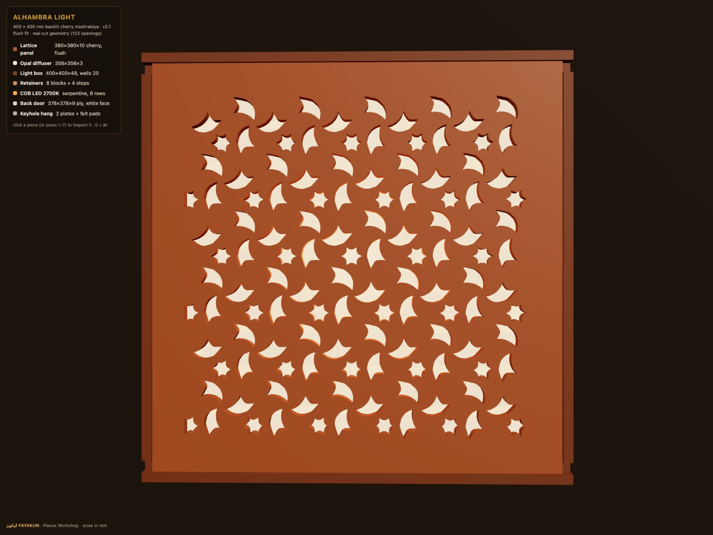
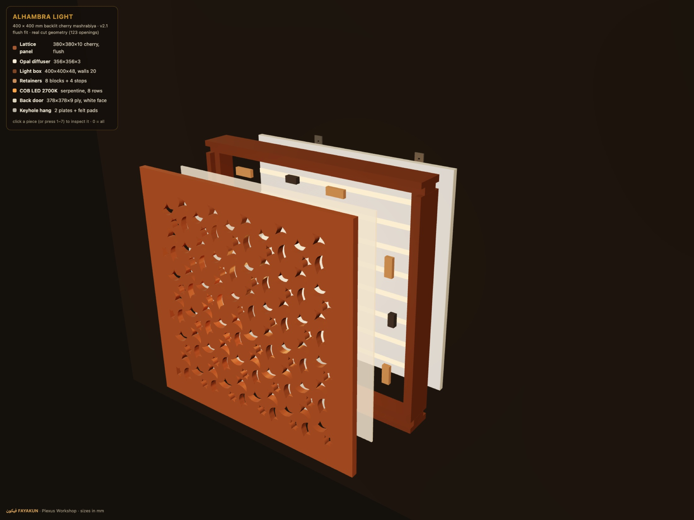
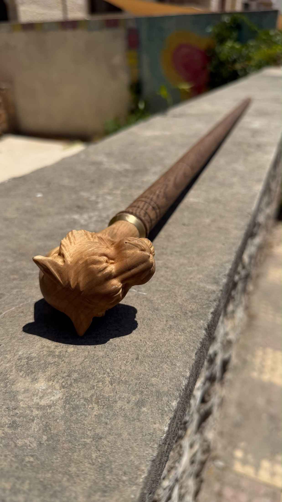
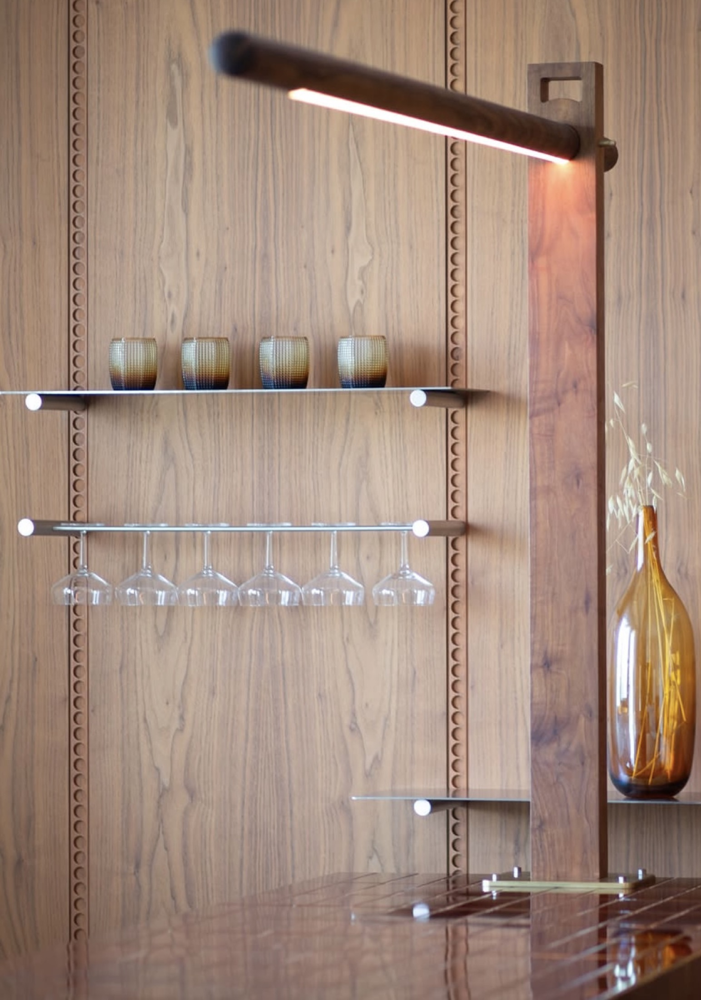
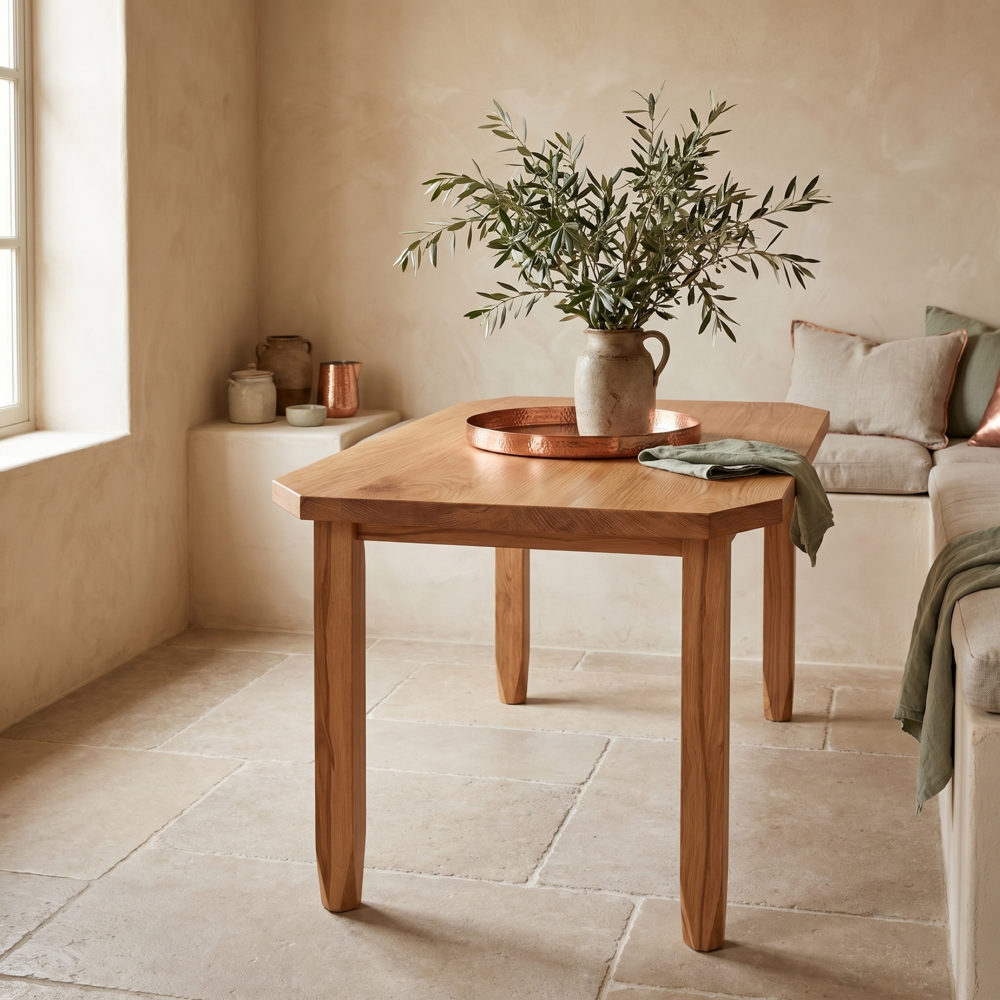
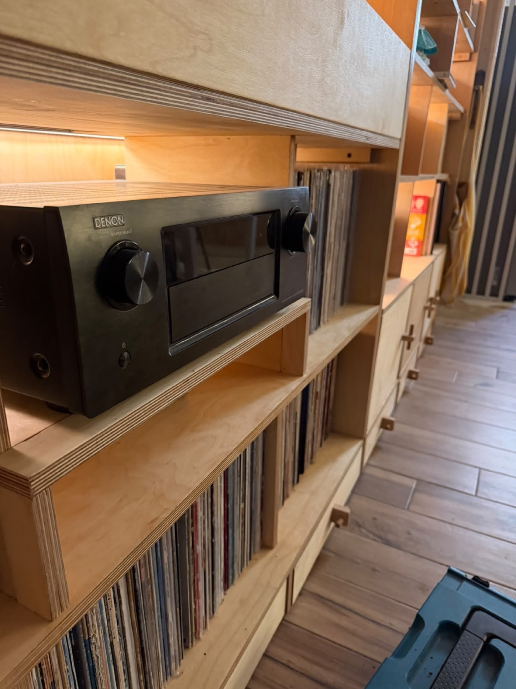
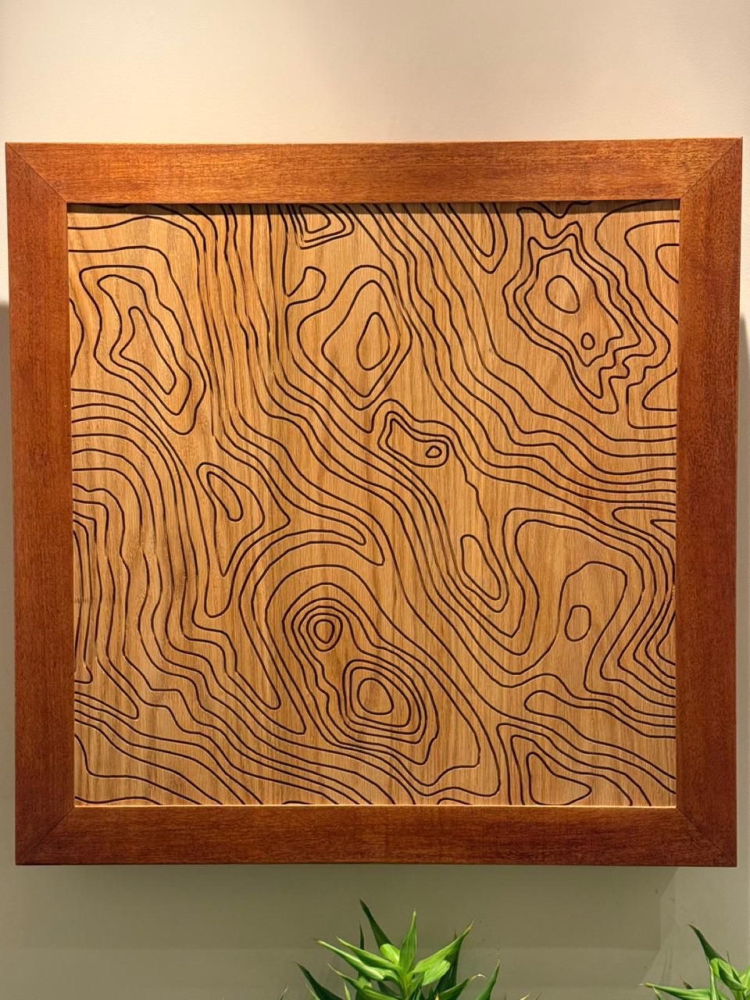
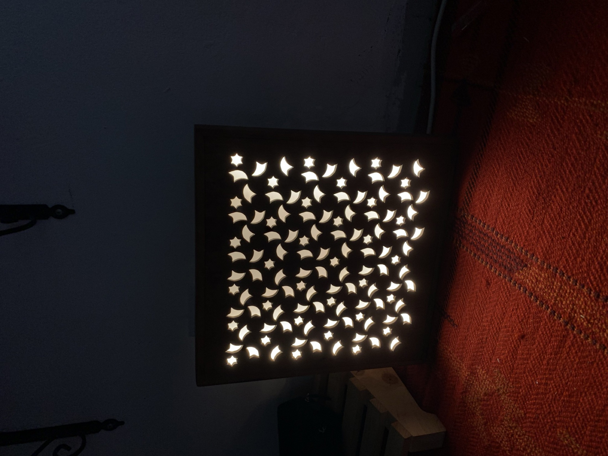

I design and sell high-end bespoke woodwork, and I bring the clients with me. I have no workshop of my own — by choice. For the past year I have run an entire premium brand out of somebody else's shop, and filled it. I'd like to do the same in yours.
A workshop's costs are fixed. The rent, the machines, the power and the wages are the same whether the floor is full or empty — so idle capacity isn't slow business, it's loss, every day of the week.
I generate demand for the kind of work most shops turn away: one-off, high-design, high-margin commissions where the client is paying for the thinking as much as the timber. I handle the client, the design, the engineering, the pricing, the drawings and the delivery. You fabricate. We share what comes in.
No investment from you. No exclusivity. No change to how you run your floor. If it doesn't make you money, you stop.
In 2025 I began operating out of a workshop in Amman that was running well under capacity. I brought no capital and no machines — only clients, design and a way of working. Today that floor is busy, and Plexus turns over real money at prices most workshops here are told they can't charge.
The before-and-after numbers. Roughly how busy was the shop when you arrived — days worked per week, jobs per month, whatever you can honestly say? This section is the strongest page in the document and right now it's the only one running on adjectives instead of figures. Give me the numbers and I'll put them in.
Every one of those enquiries arrived through reputation, search and word of mouth that I built myself. That is the asset I would be bringing through your door — not a CV.








The full catalogue, with materials and process, is at plexusworkshop.com/showcase.
Over the last year I have built the software I needed and couldn't buy. It comes with me, it runs on your jobs from the first week, and it is the reason I can quote fast and price high without guessing.
| Tool | What it does | Evidence |
|---|---|---|
| CutFlow SketchUp extension |
Nests parts onto sheets and produces the cut list. | 24 boards down to 21 across four realistic jobs — 12.5% fewer sheets, best single job 25%. Measured against a shelf/first-fit baseline, not against commercial nesting software. |
| THE LOAD structural engine |
Finite element analysis with real orthotropic timber properties and Eurocode 5 checks — sag, cracking, joints, buckling, tip-over. | Lets us quote structural and public-venue work with a number behind it instead of a shrug. Built on my M.Sc. research; I model in Ansys. |
| The Bench costing engine |
A photograph or a sentence in, and a costed board list and quote out. | Quotes leave the same day. That alone wins jobs. |
| KUN 3D visualisation |
The client sees the piece, in their material, before anyone touches timber. | It is why clients accept higher prices — they aren't buying a promise. |
| Client portals | Live build tracking. The client watches their commission progress by stage. | Fewer phone calls, later balance payments collected on time. |
M.Sc. in Timber Industry Engineering from the University of Sopron, Hungary. Published and cited research on laminated veneer lumber from underused species. Finite element modelling that predicted real deflection to within 3–9%. I know what wood does before we cut it.
Some jobs live on your machines. Some live on my drawing board and my hands at the finishing bench. Paying the same split on both would cheat one of us every time, so the terms follow the work.
Lights, boxes, carved and sculpted pieces, one-off furniture. High design and finishing content, low machine time. 60 to me, 40 to the shop, after materials.
Joinery runs, cabinetry, repeat units, anything that mostly eats saw and CNC hours. 40 to me, 60 to the shop, after materials.
Timber, sheet goods, hardware and finish come off the top before any split, at the invoice price. Neither side marks them up on the other.
Which tier a job falls into is agreed before it starts, in writing, on the job sheet. No renegotiating a piece that's already on the bench.
| Me | The workshop | |
|---|---|---|
| Finding the client | ✓ All of it | — |
| Design, engineering, drawings | ✓ At my own cost | — |
| Pricing and the client relationship | ✓ Mine, and stays mine | — |
| Machines, space, power | — | ✓ |
| Fabrication labour | Present for critical stages | ✓ |
| Finishing and quality control | ✓ Mine to hold | — |
| Delivery and installation | ✓ | — |
| If a piece is rejected by the client | Whoever's stage caused it carries the remake. Agreed per job, in writing. | |
Take one commission with me, start to finish, on the terms above. It will cost you nothing but time on a machine that is currently standing still.
At the end of it you will know exactly what I'm worth to your floor, and I'll know whether your shop can hold the standard I sell. If either answer is no, we shake hands and that's the end of it. If both are yes, we do it again next month, and the month after.
I'm not asking you to believe a proposal. I'm asking you to run one job.